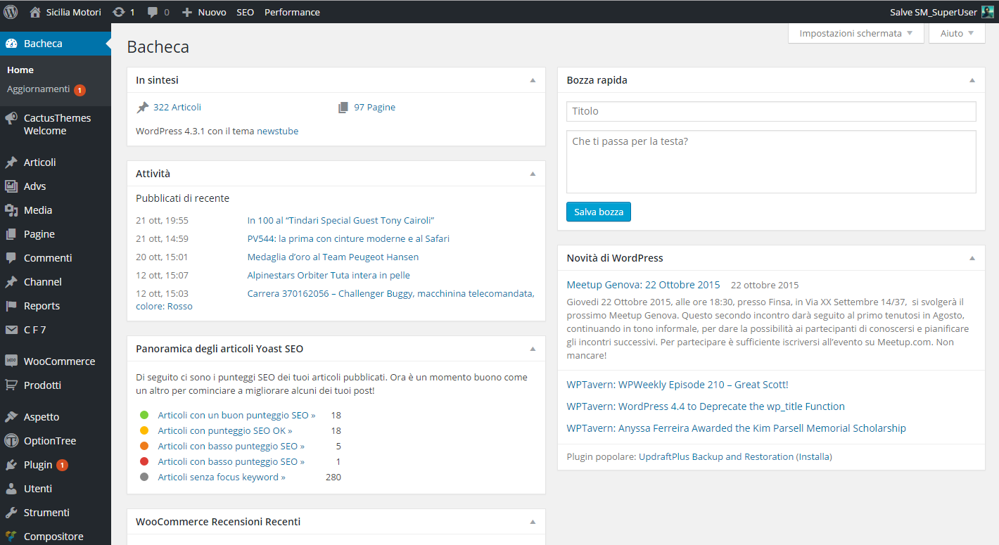

Vi starete forse chiedendo che significa la parola "Back-end", il back-end è la parte posteriore/nascosta del sito, quella che cioè ci permette di inserire gli articoli, modificarli o togliere e aggiungere determinati oggetti o immagini.
 Potete vedere a sinistra la barra delle sezioni del sito (che nel vostro caso srà ridotta), e al centro la bacheca iniziale del sito